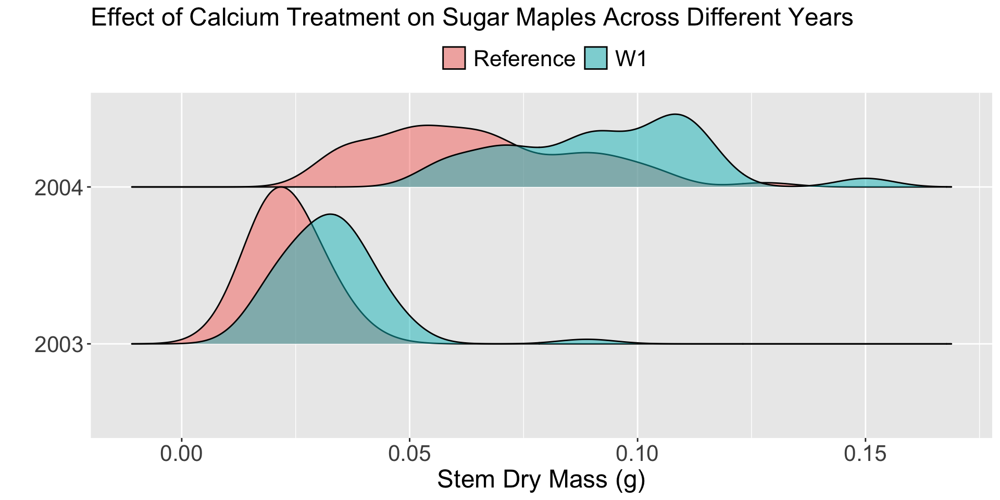
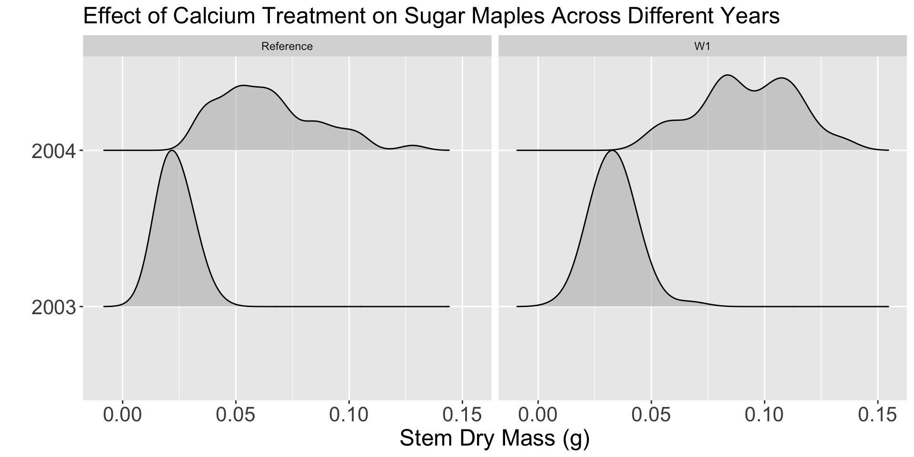
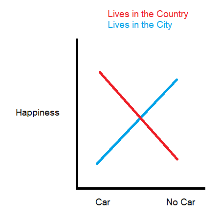
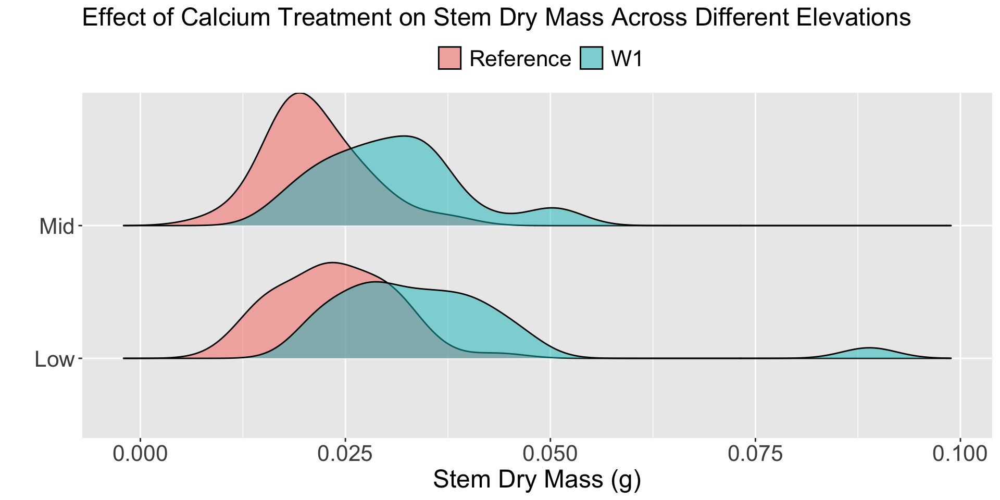

Week 10: Two-way ANOVA
Week 10
Wrapping Up Revisions
- Statistical Critique 2 revisions are due by Thursday
- Lab 8 revisions are due by Thursday
- Final revisions on all assignments will be accepted until this Sunday, March 17
. . .
One round of revisions
You will only have time for one round of revisions on Lab 8 and Statistical Critique 2, so make sure you feel confident about your revisions.
Final Project
- Feedback (from me) will be provided no later than Thursday evening
- Peer feedback on Thursday
- Print your report!
Two-Way ANOVA Models
Two-way ANOVA
Goal:
Assess if multiple categorical variables have a relationship with the response.
Modeling Options
Additive Model
Assess if each explanatory variable has a meaningful relationship with the response, conditional on the variable(s) included in the model.
Interaction Model
Assess if the relationship between one categorical explanatory variable and the response differs based on the values of another categorical variable.
What are we looking for?
Another way to think about it…

Interaction Two-way ANOVA
Research Question
Does the relationship between stem dry mass and calcium treatment for sugar maples differ based on the year the treatment was applied?
. . .
Or, because the study was an experiment…
Does the effect of calcium treatment on the stem dry mass of sugar maples differ based on the year of the treatment?
Conditions
- Independence of observations
Observations are independent within groups and between groups
. . .
- Equal variability of the groups
The spread of the distributions are similar across groups
. . .
- Normality of the residuals
The distribution of residuals for each group is approximately normal
Theory-based Two-Way ANOVA
aov(stem_dry_mass ~ watershed * year_cat,
data = hbr_maples_small)| term | df | sumsq | meansq | statistic | p.value |
|---|---|---|---|---|---|
| watershed | 1 | 0.016738401 | 0.0167384006 | 73.57493 | 1.714080e-15 |
| year_cat | 1 | 0.109417457 | 0.1094174573 | 480.95287 | 2.232451e-57 |
| watershed:year_cat | 1 | 0.004320073 | 0.0043200727 | 18.98921 | 2.013559e-05 |
| Residuals | 221 | 0.050277812 | 0.0002275014 | NA | NA |
. . .
The watershed:year_cat line is testing if the relationship between the calcium treatment (watershed) and stem dry mass differs between 2003 and 2004.
. . .
How are those p-values calculated?
The p-values in the previous table use Type I sums of squares.
Type I sums of squares are “sequential,” meaning variables are tested in the order they are listed.
. . .
So, the p-value for watershed:year_cat is conditional on including watershed and year_cat as explanatory variables.
. . .
Is that what we want????
Testing “main effects”
If there is evidence of an interaction, we do not test if the main effects are “significant.”
. . .
Why?
. . .
The interactions depend on these variables, so they should be included in the model!
Interpreting “main effects”
When interaction effects are present, the interpretation of the main effects is incomplete or misleading

Additive Two-way ANOVA
What if our analysis found no evidence of an interaction?

Testing for a relationship for each variable
aov(stem_dry_mass ~ elevation + watershed,
data = hbr_maples_small) %>%
tidy()| term | df | sumsq | meansq | statistic | p.value |
|---|---|---|---|---|---|
| elevation | 1 | 0.0001345297 | 0.0001345297 | 1.82845 | 1.783595e-01 |
| watershed | 1 | 0.0035733249 | 0.0035733249 | 48.56658 | 9.607445e-11 |
| Residuals | 149 | 0.0109627935 | 0.0000735758 | NA | NA |
. . .
Do you think it matters which variable comes first?
Let’s see…
aov(stem_dry_mass ~ watershed + elevation,
data = hbr_maples) %>%
tidy()| term | df | sumsq | meansq | statistic | p.value |
|---|---|---|---|---|---|
| watershed | 1 | 0.0065062507 | 6.506251e-03 | 86.658504 | 9.073535e-18 |
| elevation | 1 | 0.0005821935 | 5.821935e-04 | 7.754392 | 5.791052e-03 |
| Residuals | 237 | 0.0177937692 | 7.507919e-05 | NA | NA |
Did we get the same p-values as before?
Sequential Versus Partial Sums of Squares
Similar to before, the p-values in the ANOVA table use Type I (sequential) sums of squares.
- The p-value for each variable is conditional on the variable(s) that came before it.
- The p-value for
elevationis conditional onwatershedbeing included in the model - The p-value for
watershedis conditional on…nothing.
. . .
If we want the p-value for each explanatory variable to be conditional on every variable included in the model, then we need to use a different type of sums of squares!
Partial Sums of Squares
Type III sums of squares are “partial,” meaning every term in the model is tested in light of the other terms in the model.
. . .
- The p-value for
elevationis conditional onwatershedbeing included in the model - The p-value for
watershedis conditional onelevationbeing included in the model
. . .
Only different for variables that were not first
We could have used Type III sums of squares for the interaction model and would have gotten the same p-value!
Getting the Conditional Tests for Every Variable
library(car)
water_elev_lm <- lm(stem_dry_mass ~ watershed + elevation,
data = hbr_maples_small)
Anova(water_elev_lm, type = "III")
Load in the
car package!
Additive Model Hypothesis Tests
| term | sumsq | df | statistic | p.value |
|---|---|---|---|---|
| (Intercept) | 0.0370595336 | 1 | 503.691919 | 1.193044e-49 |
| watershed | 0.0035733249 | 1 | 48.566583 | 9.607445e-11 |
| elevation | 0.0003059393 | 1 | 4.158151 | 4.320201e-02 |
| Residuals | 0.0109627935 | 149 | NA | NA |
What do you think the is the elevation line testing?
What would you decide?
Keeping “Non-significant” Variables
Should you always remove variables with “large” p-values from an ANOVA?
. . .
No!
Even “non-significant” variables explain some amount of the variation in the response. Which makes your estimates of a treatment effect more precise!
Steps for Final Project
Hypothesis Test Steps
Step 1: Fit a one-way ANOVA model for each categorical variable
Step 2: Decide if each explanatory variable has a meaningful relationship with the response variable
- If yes, then go to Step 3!
- If no, then report which variable (if any) has the strongest relationship with the response.
Step 3 – Fit an Additive Two-way ANOVA
If there is evidence that both variables have a relationship with the response variable, then you fit an additive two-way ANOVA.
library(car)
my_model <- lm(<NAME OF RESPONSE VARIABLE> ~ <NAME OF EXPLANATORY VARIABLE 1> + <NAME OF EXPLANATORY VARIABLE 2>,
data = <NAME OF DATASET>)
Anova(my_model, type = “III”) %>%
tidy()
Don’t forget to load in the
car package!
What about interaction models?
For the sake of time, we are not fitting interaction models for the Final Project.
Do you always expect your main effects to be “significant” in a two-way ANOVA?
Work Session
Your Options
- Complete your revisions on Lab 8
- Complete your revisions on Statistical Critique 2
- Fit your two-way ANOVA model for your Final Project and interpret the results
- Finish any remaining revisions on lab or statistical critiques